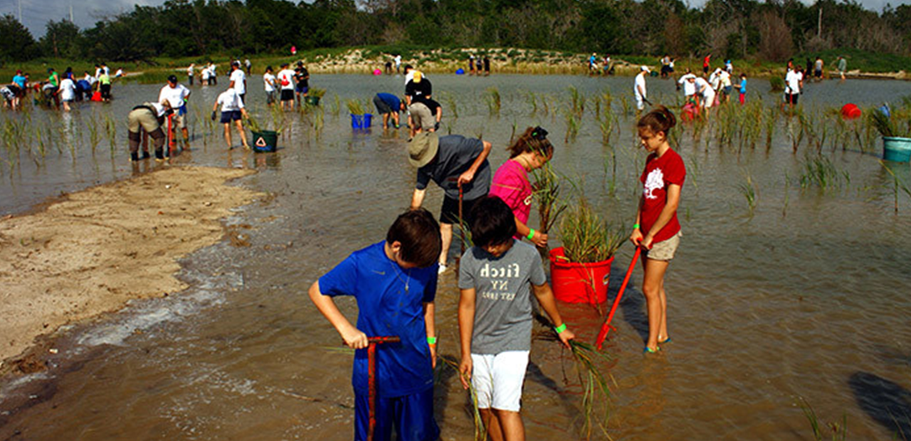

Galveston Bay Foundation’s (GBF) mission is to protect and enhance Galveston Bay as a healthy and productive place for generations to come.
GBF’s Water Monitoring Team is filled with people like you, citizens who care about Galveston Bay’s waters and are working to help protect it. Trained volunteers conduct monthly water quality sampling at specific locations around Galveston Bay. These volunteers serve as advocates for the Bay and connect their community to local water quality concerns. This data portal allows you to view and download the data collected by this team.
Learn more at www.galvbay.org/watermonitors This project is supported by the Gulf Research Program of the National Academies of Sciences, Engineering, and Medicine under award number 2000008125. The content is solely the responsibility of the authors and does not necessarily represent the official views of the Gulf Research Program or the National Academies of Sciences, Engineering, and Medicine.
THIS PROJECT IS FUNDED IN PARTBY A TEXAS COASTAL MANAGEMENT PROGRAM GRANT APPROVED BY THETEXAS LAND COMMISSIONER PURSUANT TO NATIONAL OCEANICAND ATMOSPHERIC ADMINISTRATION AWARD NO. NA18NOS4190153.